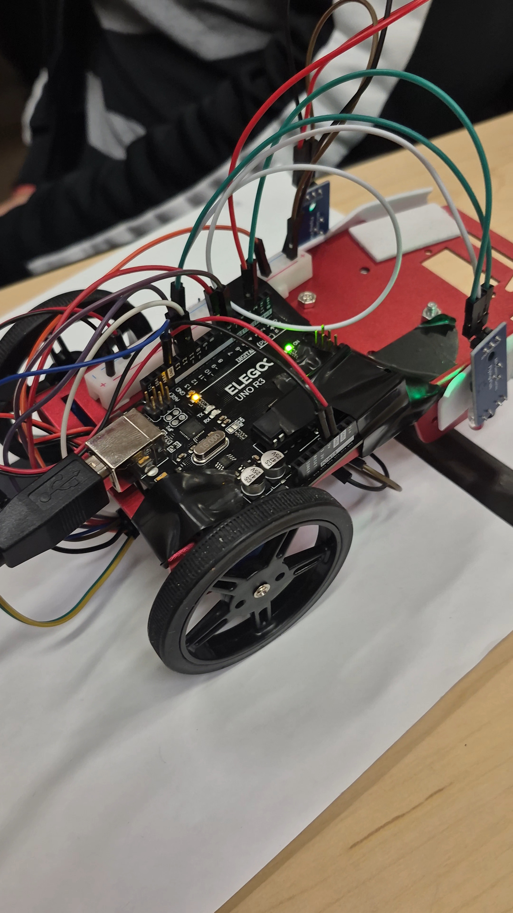
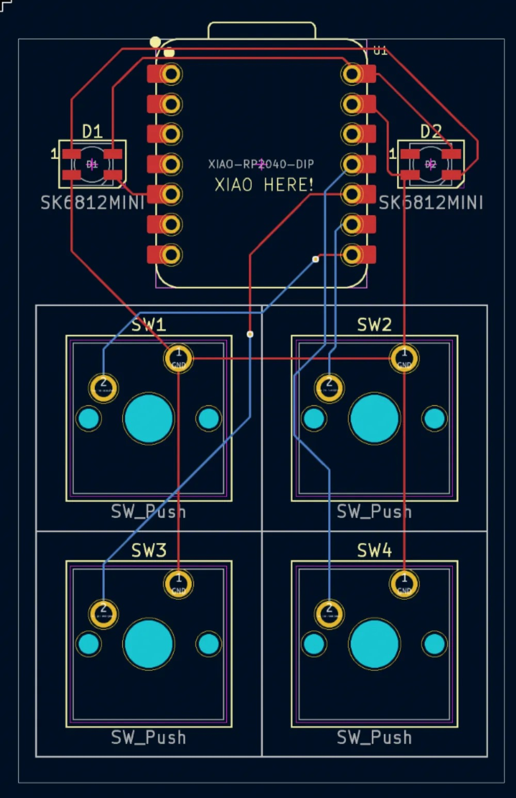
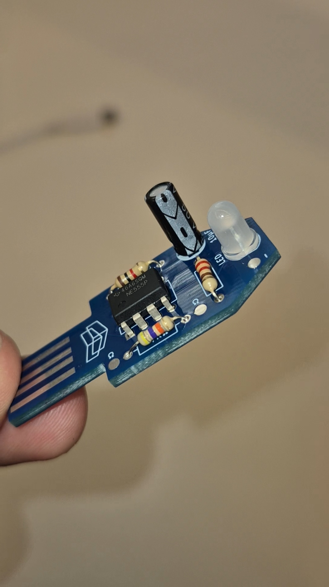
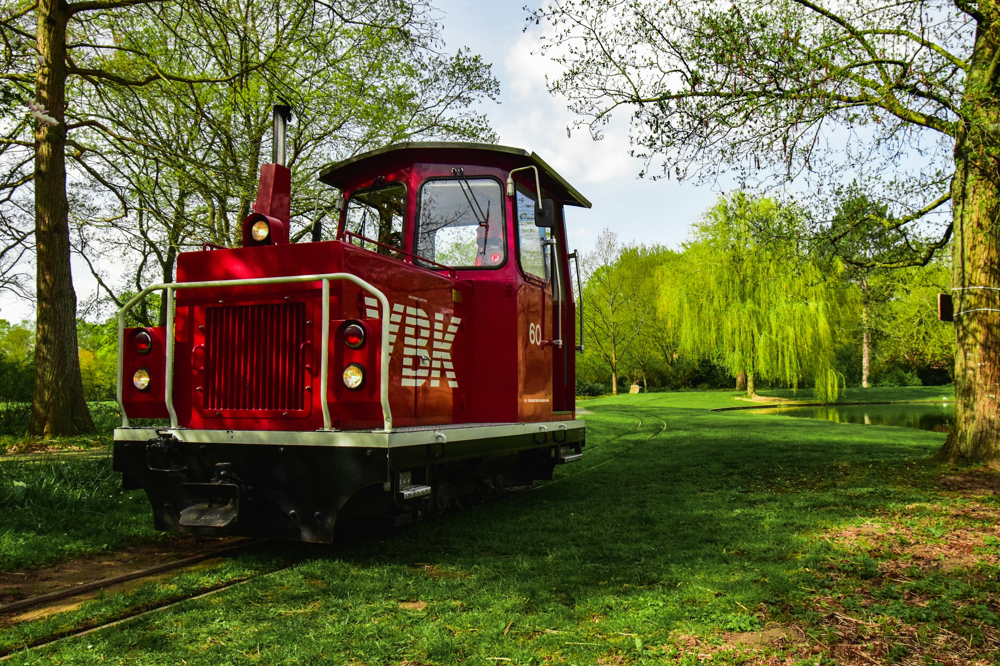

Electrical Engineering Student | Event Manager | Photographer
Based in Toronto. Combining technical acumen with human-centered leadership. Focused on Hardware systems, Circuits, and Sustainable Tech.
Actively Seeking Internships
I grew up in Bangalore's electric diversity where people from every corner of India collided daily. That's where I became a natural communicator, effortlessly connecting across backgrounds. Leadership is never a role that I chase; it's how I'm wired.
At 18, I left that vibrant world for Toronto's engineering frontier. Now as a first-year TMU electrical engineering student, I'm diving deep into hardware—clean energy systems, semiconductors and circuits—while staying true to my people-first core.
Surrounded by individuals my whole life, I thrive in leading diverse teams through chaos. From Bangalore's crossroads to TMU's labs, I bring genuine care and a natural command.
KiCad (PCB design, schematic capture, layout)
C++, Python, MATLAB
Soldering, 3D Printing
Circuit analysis and connections

C++, Arduino · IR sensors, DC motors, feedback control
Self-driving robot using PID-style control: Arduino Uno reads IR/LED sensors, runs decision logic, and drives dual DC motors via PWM. Calibrated sensors to distinguish track from noise; implemented navigation for sharp turns. Analog-to-digital conversion, conditional logic, and real-time processing. Reliable 90%+ track-following accuracy.
TMU · Nov 2025

KiCad, PCB design, 3D printing, firmware
Full hardware product: custom PCB in KiCad, hand-wired switch matrix, 3D-printed case. Wrote firmware for key scanning and matrix readout. End-to-end design from schematic to enclosure.

Electronics, soldering, Ohm's Law
Mini USB dongle that lights up when plugged in—powered solely from the port's 5V. LEDs in series with current-limiting resistors; values from R = (V_source − V_LED) / I. Soldered assembly, no external supply. Practical application of power management and creative reuse of USB.

Unsplash · Lightroom · Event & urban
Top 25% on Unsplash with more than 170k+ views and thousands of downloads. Landscape, urban architecture, and event coverage. Combines technical composition with human-centered storytelling; used in marketing and design.
View on Unsplash →pranetchiragt@gmail.com · Open for EE Internships
"The only limit to our realization of tomorrow is our doubts of today." – Franklin D. Roosevelt
© 2026 Pranet Chirag Talati.
Currently working on coding a game for a hackathon in Toronto, making a robot for a club at TMU which I am a part of, joining the F-1 club at TMU in the electrical systems category and learning about aerospace applications of my studies—possibly constructing a satellite.
More to come.